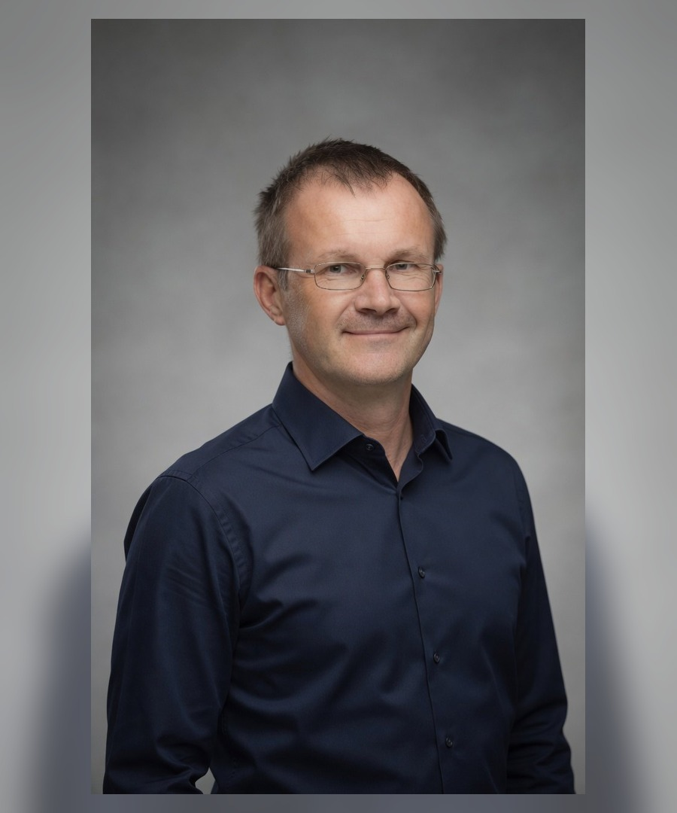
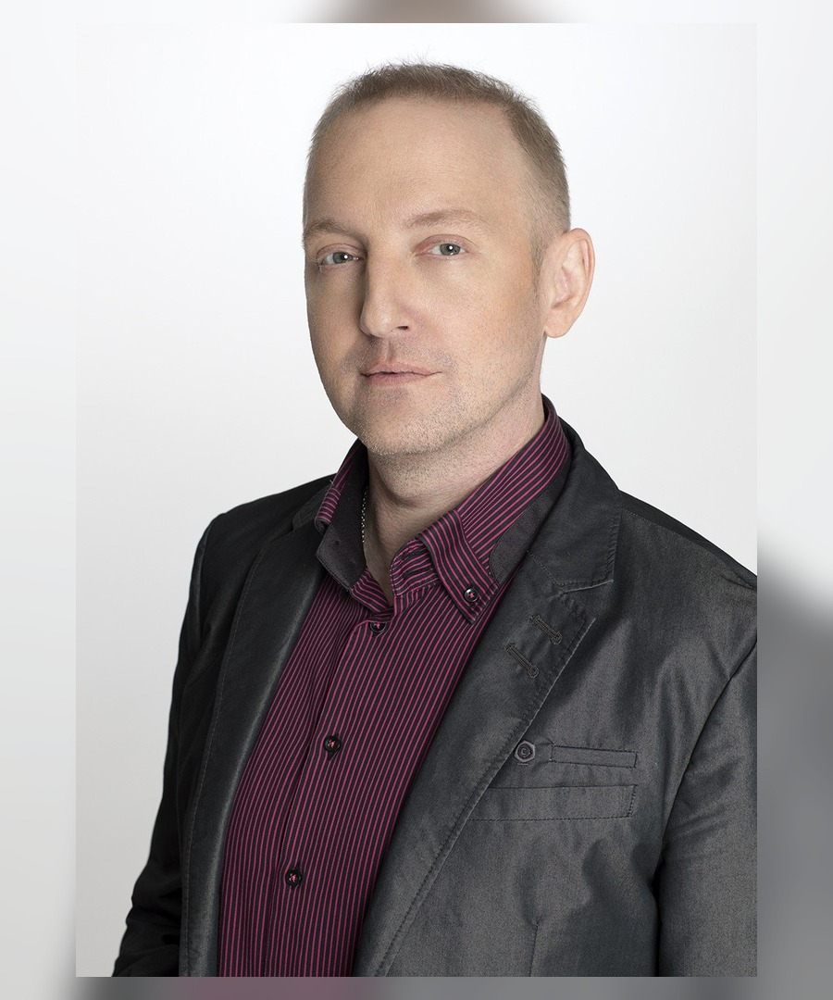
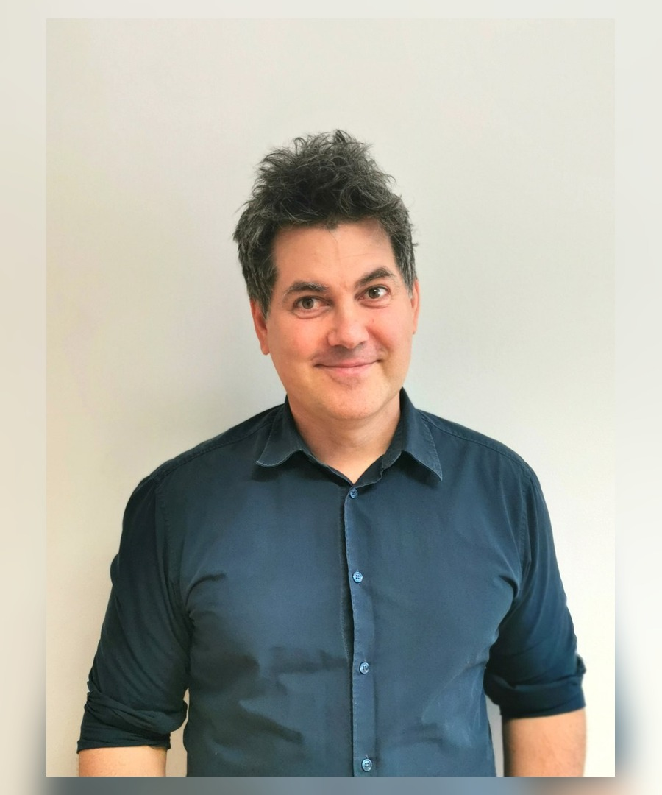
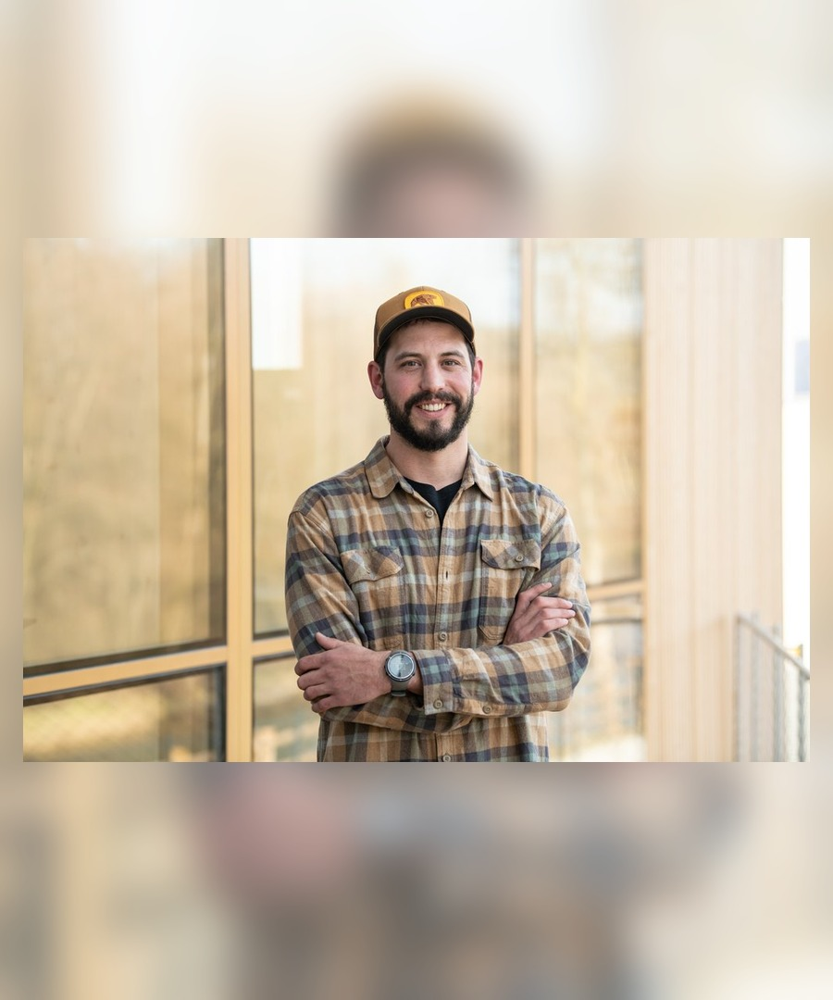
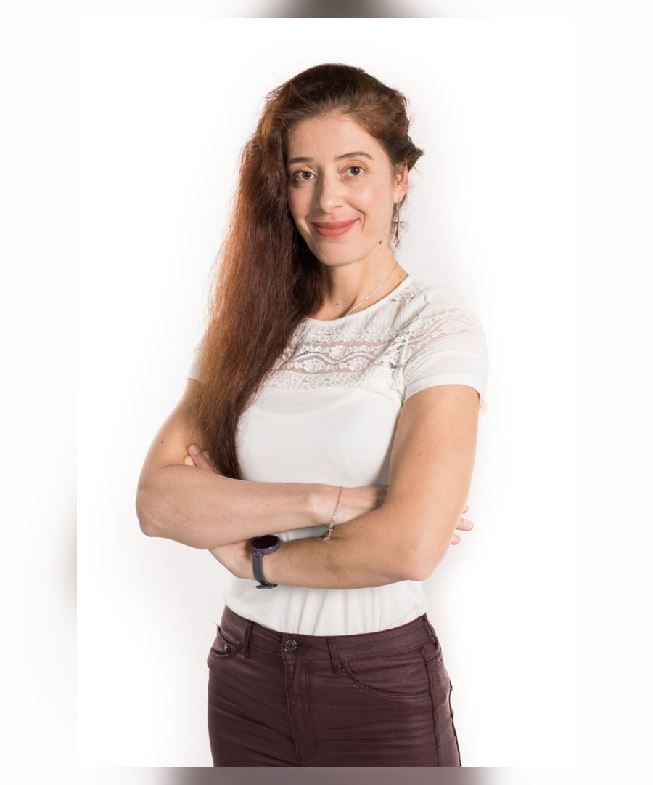
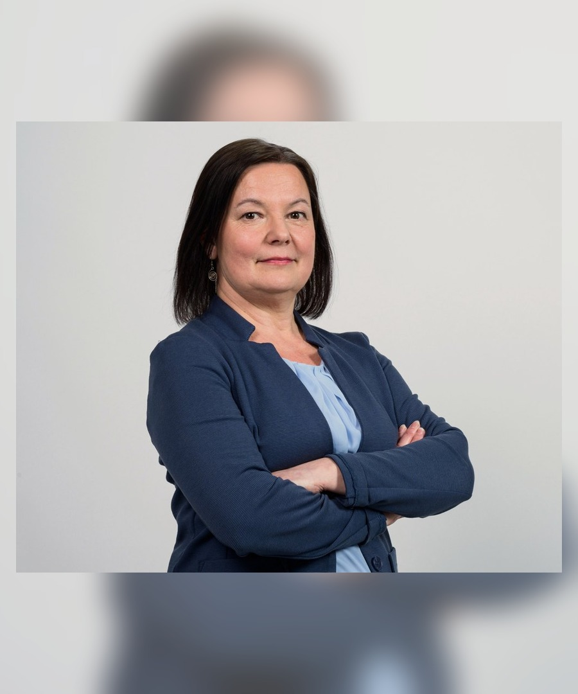

Hydrology and water balance
Water balance modelling, groundwater and surface water analysis, hydrological indicators, droughts and floods.
Research. Nature. Sustainability.
Alpines d.o.o. brings together an interdisciplinary consortium of researchers and experts in hydrology, climate change, geoinformatics, environmental modelling, biodiversity, demographic analysis and data-driven methods.
Organisation profile
Alpines d.o.o. is a Slovenia-based company focused on geoinformation, environmental data services, technical consultancy and research support. The organisation works with a network of experienced experts to provide robust, transparent and policy-relevant environmental knowledge.
The consortium is prepared to support European Environment Agency knowledge production through scientific analysis, geospatial processing, environmental reporting, modelling workflows and clear communication of results.
Core expertise
Water balance modelling, groundwater and surface water analysis, hydrological indicators, droughts and floods.
Climate impact assessment, adaptation-relevant indicators, scenario interpretation and environmental risk analysis.
GIS, spatial databases, environmental datasets, data processing workflows, visualisation and reproducible reporting.
Ecological context, environmental assessment, nature-related data and interdisciplinary interpretation.
Demographic and impact assessment perspectives supporting just, fair and policy-relevant environmental transitions.
Data-driven methods, machine learning support, automation and scalable processing of environmental information.
Expert consortium
The team combines geography, hydrology, climate-impact assessment, environmental assessment, biodiversity conservation, sustainability, geospatial analysis and advanced data-driven methods for environmental knowledge production.

Geography, hydrology, water balance modelling, climate change impacts, GIS
Geographer, hydrologist, environmentalist with expertise in water balance modelling, hydrology, hydrogeology, environmental monitoring, climate impact assessment, indicators, EU water data reporting...
SICRIS / COBISS bibliography
Business informatics, data science, AI, machine learning, NLP and analytics
Researcher and academic in business informatics with expertise in AI, machine learning, topic modelling, sentiment analysis, data pipelines, Power BI, R, Python and scalable text/data analytics.
SICRIS / COBISS bibliography
Geography, EIA/SEA, demography, GIS, environmental and socio-economic analysis
Geographer, lecturer and project manager experienced in environmental impact assessment, strategic environmental assessment, demographic and settlement studies, GIS-based analyses, environmental reporting and stakeholder communication.
SICRIS / COBISS bibliography
Biology, ecology, biodiversity, aquatic ecosystems and conservation communication
Biologist and river conservation practitioner with experience in ecology and biodiversity sampling, aquatic ecosystem conservation, project management, public engagement, media production and international environmental communication.
SICRIS / COBISS bibliography
Biology, climate change, CCS, LCA, ESG sustainability and environmental management
Biologist and PhD researcher with expertise in climate change, carbon capture and storage, drought management, LCA modelling, ESG/sustainability reporting, ISO 14001 auditing and applied environmental research.
SICRIS / COBISS bibliography
Geography, hydrology, hydrological monitoring, sediments and hydromorphology
Geographer and hydrologist specialising in hydrological monitoring and analysis, suspended sediment monitoring, hydromorphological assessment, GIS, field measurements, environmental indicators and international river-basin cooperation.
SICRIS / COBISS bibliographyContact
Stara cesta 7A, 4207 Cerklje na Gorenjskem, Slovenia
VAT Nr: 83710922
Email: p.frantar@gmail.com